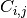
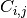
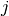
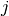

sklearn.metrics.confusion_matrix¶
- sklearn.metrics.confusion_matrix(y_true, y_pred, labels=None)¶
Compute confusion matrix to evaluate the accuracy of a classification
By definition a confusion matrix
 is such that 
is equal to the number of observations known to be in group
is such that 
is equal to the number of observations known to be in group  but
predicted to be in group .
but
predicted to be in group .Parameters: y_true : array, shape = [n_samples]
Ground truth (correct) target values.
y_pred : array, shape = [n_samples]
Estimated targets as returned by a classifier.
labels : array, shape = [n_classes], optional
List of labels to index the matrix. This may be used to reorder or select a subset of labels. If none is given, those that appear at least once in y_true or y_pred are used in sorted order.
Returns: C : array, shape = [n_classes, n_classes]
Confusion matrix
References
[R132] Wikipedia entry for the Confusion matrix Examples
>>> from sklearn.metrics import confusion_matrix >>> y_true = [2, 0, 2, 2, 0, 1] >>> y_pred = [0, 0, 2, 2, 0, 2] >>> confusion_matrix(y_true, y_pred) array([[2, 0, 0], [0, 0, 1], [1, 0, 2]])